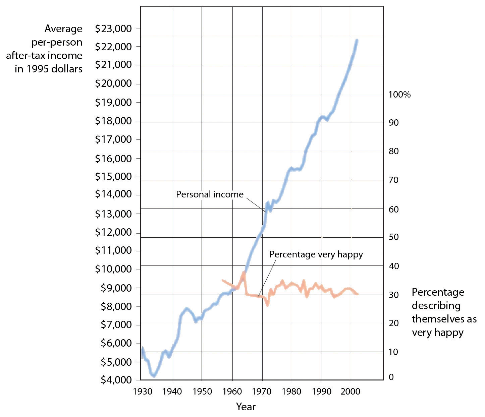

Although stress is an emotional response that can kill us, our emotions can also help us cope with and protect ourselves from it. The stress of the Monday through Friday grind can be offset by the fun that we can have on the weekend, and the concerns that we have about our upcoming chemistry exam can be offset by a positive attitude toward school, life, and other people. Put simply, the best antidote for stress is a happy one: Think positively, have fun, and enjoy the company of others.
You have probably heard about the “power of positive thinking”—the idea that thinking positively helps people meet their goals and keeps them healthy, happy, and able to effectively cope with the negative events that occur to them. It turns out that positive thinking really works. People who think positively about their future, who believe that they can control their outcomes, and who are willing to open up and share with others are healthier people (Seligman, & Csikszentmihalyi, 2000).Seligman, M. E. P., & Csikszentmihalyi, M. (2000). Positive psychology: An introduction. American Psychologist, 55(1), 5–14.
The power of positive thinking comes in different forms, but they are all helpful. Some researchers have focused on optimismThe general tendency to expect positive outcomes., a general tendency to expect positive outcomes, finding that optimists are happier and have less stress (Carver & Scheier, 2009).Carver, C. S., & Scheier, M. F. (2009). Optimism. In M. R. Leary & R. H. Hoyle (Eds.), Handbook of individual differences in social behavior (pp. 330–342). New York, NY: Guilford Press. Others have focused self-efficacyThe belief in our ability to carry out actions that produce desired outcomes., the belief in our ability to carry out actions that produce desired outcomes. People with high self-efficacy respond to environmental and other threats in an active, constructive way—by getting information, talking to friends, and attempting to face and reduce the difficulties they are experiencing. These people too are better able to ward off their stresses in comparison to people with less self-efficacy (Thompson, 2009).Thompson, S. C. (2009). The role of personal control in adaptive functioning. In S. J. Lopez & C. R. Snyder (Eds.), Oxford handbook of positive psychology (2nd ed., pp. 271–278). New York, NY: Oxford University Press.
Self-efficacy helps in part because it leads us to perceive that we can control the potential stressors that may affect us. Workers who have control over their work environment (e.g., by being able to move furniture and control distractions) experience less stress, as do patients in nursing homes who are able to choose their everyday activities (Rodin, 1986).Rodin, J. (1986). Aging and health: Effects of the sense of control. Science, 233(4770), 1271–1276. Glass, Reim, and Singer (1971)Glass, D. C., Reim, B., & Singer, J. E. (1971). Behavioral consequences of adaptation to controllable and uncontrollable noise. Journal of Experimental Social Psychology, 7(2), 244–257. found that participants who believed that they could stop a loud noise experienced less stress than those who did not think that they could, even though the people who had the option never actually used it. The ability to control our outcomes may help explain why animals and people who have higher status live longer (Sapolsky, 2005).Sapolsky, R. M. (2005). The influence of social hierarchy on primate health. Science, 308(5722), 648–652.
Suzanne Kobasa and her colleagues (Kobasa, Maddi, & Kahn, 1982)Kobasa, S. C., Maddi, S. R., & Kahn, S. (1982). Hardiness and health: A prospective study. Journal of Personality and Social Psychology, 42(1), 168–177. have argued that the tendency to be less affected by life’s stressors can be characterized as an individual difference measure that has a relationship to both optimism and self-efficacy known as hardiness. Hardy individuals are those who are more positive overall about potentially stressful life events, who take more direct action to understand the causes of negative events, and who attempt to learn from them what may be of value for the future. Hardy individuals use effective coping strategies, and they take better care of themselves.
Taken together, these various coping skills, including optimism, self-efficacy, and hardiness, have been shown to have a wide variety of positive effects on our health. Optimists make faster recoveries from illnesses and surgeries (Carver et al., 2005).Carver, C. S., Smith, R. G., Antoni, M. H., Petronis, V. M., Weiss, S., & Derhagopian, R. P. (2005). Optimistic personality and psychosocial well-being during treatment predict psychosocial well-being among long-term survivors of breast cancer. Health Psychology, 24(5), 508–516. People with high self-efficacy have been found to be better able to quit smoking and lose weight and are more likely to exercise regularly (Cohen & Pressman, 2006).Cohen, S., & Pressman, S. D. (2006). Positive affect and health. Current Directions in Psychological Science, 15(3), 122–125. And hardy individuals seem to cope better with stress and other negative life events (Dolbier, Smith, & Steinhardt, 2007).Dolbier, C. L., Smith, S. E., & Steinhardt, M. A. (2007). Relationships of protective factors to stress and symptoms of illness. American Journal of Health Behavior, 31(4), 423–433. The positive effects of positive thinking are particularly important when stress is high. Baker (2007)Baker, S. R. (2007). Dispositional optimism and health status, symptoms, and behaviors: Assessing ideothetic relationships using a prospective daily diary approach. Psychology and Health, 22(4), 431–455. found that in periods of low stress, positive thinking made little difference in responses to stress, but that during stressful periods optimists were less likely to smoke on a day-to-day basis and to respond to stress in more productive ways, such as by exercising.
It is possible to learn to think more positively, and doing so can be beneficial. Antoni et al. (2001)Antoni, M. H., Lehman, J. M., Klibourn, K. M., Boyers, A. E., Culver, J. L., Alferi, S. M.,…Kilbourn, K. (2001). Cognitive-behavioral stress management intervention decreases the prevalence of depression and enhances benefit finding among women under treatment for early-stage breast cancer. Health Psychology, 20(1), 20–32. found that pessimistic cancer patients who were given training in optimism reported more optimistic outlooks after the training and were less fatigued after their treatments. And Maddi, Kahn, and Maddi (1998)Maddi, S. R., Kahn, S., & Maddi, K. L. (1998). The effectiveness of hardiness training. Consulting Psychology Journal: Practice and Research, 50(2), 78–86. found that a “hardiness training” program that included focusing on ways to effectively cope with stress was effective in increasing satisfaction and decreasing self-reported stress.
The benefits of taking positive approaches to stress can last a lifetime. Christopher Peterson and his colleagues (Peterson, Seligman, Yurko, Martin, & Friedman, 1998)Peterson, C., Seligman, M. E. P., Yurko, K. H., Martin, L. R., & Friedman, H. S. (1998). Catastrophizing and untimely death. Psychological Science, 9(2), 127–130. found that the level of optimism reported by people who had first been interviewed when they were in college during the years between 1936 and 1940 predicted their health over the next 50 years. Students who had a more positive outlook on life in college were less likely to have died up to 50 years later of all causes, and they were particularly likely to have experienced fewer accidental and violent deaths, in comparison to students who were less optimistic. Similar findings were found for older adults. After controlling for loneliness, marital status, economic status, and other correlates of health, Levy and Myers found that older adults with positive attitudes and higher self-efficacy had better health and lived on average almost 8 years longer than their more negative peers (Levy & Myers, 2005; Levy, Slade, & Kasl, 2002).Levy, B., & Myers, L. (2005). Relationship between respiratory mortality and self-perceptions of aging. Psychology & Health, 20(5), 553–564. doi:10.1080/14768320500066381; Levy, B., Slade, M., & Kasl, S. (2002). Longitudinal benefit of positive self-perceptions of aging on functional health. Journals of Gerontology Series B: Psychological Sciences & Social Sciences, 57B(5), P409. Retrieved from Academic Search Premier Database. And Diener, Nickerson, Lucas, and Sandvik (2002)Diener, E., Nickerson, C., Lucas, R., & Sandvik, E. (2002). Dispositional affect and job outcomes. Social Indicators Research, 59(3), 229. Retrieved from Academic Search Premier Database. found that people who had cheerier dispositions earlier in life had higher income levels and less unemployment when they were assessed 19 years later.
Happiness is determined in part by genetic factors, such that some people are naturally happier than others (Braungart, Plomin, DeFries, & Fulker, 1992; Lykken, 2000),Braungart, J. M., Plomin, R., DeFries, J. C., & Fulker, D. W. (1992). Genetic influence on tester-rated infant temperament as assessed by Bayley’s Infant Behavior Record: Nonadoptive and adoptive siblings and twins. Developmental Psychology, 28(1), 40–47; Lykken, D. T. (2000). Happiness: The nature and nurture of joy and contentment. New York, NY: St. Martin’s Press. but also in part by the situations that we create for ourselves. Psychologists have studied hundreds of variables that influence happiness, but there is one that is by far the most important. People who report that they have positive social relationships with others—the perception of social supportThe experience of having positive and supportive social relationships with others.—also report being happier than those who report having less social support (Diener, Suh, Lucas, & Smith, 1999; Diener, Tamir, & Scollon, 2006).Diener, E., Suh, E. M., Lucas, R. E., & Smith, H. L. (1999). Subjective well-being: Three decades of progress. Psychological Bulletin, 125(2), 276–302; Diener, E., Tamir, M., & Scollon, C. N. (2006). Happiness, life satisfaction, and fulfillment: The social psychology of subjective well-being. In P. A. M. VanLange (Ed.), Bridging social psychology: Benefits of transdisciplinary approaches. Mahwah, NJ: Lawrence Erlbaum Associates. Married people report being happier than unmarried people (Pew, 2006),Pew Research Center (2006, February 13). Are we happy yet? Retrieved from http://pewresearch.org/pubs/301/are-we-happy-yet and people who are connected with and accepted by others suffer less depression, higher self-esteem, and less social anxiety and jealousy than those who feel more isolated and rejected (Leary, 1990).Leary, M. R. (1990). Responses to social exclusion: Social anxiety, jealousy, loneliness, depression, and low self-esteem. Journal of Social and Clinical Psychology, 9(2), 221–229.
Social support also helps us better cope with stressors. Koopman, Hermanson, Diamond, Angell, and Spiegel (1998)Koopman, C., Hermanson, K., Diamond, S., Angell, K., & Spiegel, D. (1998). Social support, life stress, pain and emotional adjustment to advanced breast cancer. Psycho-Oncology, 7(2), 101–110. found that women who reported higher social support experienced less depression when adjusting to a diagnosis of cancer, and Ashton et al. (2005)Ashton, E., Vosvick, M., Chesney, M., Gore-Felton, C., Koopman, C., O’Shea, K.,…Spiegel, D. (2005). Social support and maladaptive coping as predictors of the change in physical health symptoms among persons living with HIV/AIDS. AIDS Patient Care & STDs, 19(9), 587–598. doi:10.1089/apc.2005.19.587 found a similar buffering effect of social support for AIDS patients. People with social support are less depressed overall, recover faster from negative events, and are less likely to commit suicide (Au, Lau, & Lee, 2009; Bertera, 2007; Compton, Thompson, & Kaslow, 2005; Skärsäter, Langius, Ågren, Häagström, & Dencker, 2005).Au, A., Lau, S., & Lee, M. (2009). Suicide ideation and depression: The moderation effects of family cohesion and social self-concept. Adolescence, 44(176), 851–868. Retrieved from Academic Search Premier Database; Bertera, E. (2007). The role of positive and negative social exchanges between adolescents, their peers and family as predictors of suicide ideation. Child & Adolescent Social Work Journal, 24(6), 523–538. doi:10.1007/s10560-007-0104-y; Compton, M., Thompson, N., & Kaslow, N. (2005). Social environment factors associated with suicide attempt among low-income African Americans: The protective role of family relationships and social support. Social Psychiatry & Psychiatric Epidemiology, 40(3), 175–185. doi:10.1007/s00127-005-0865-6; Skärsäter, I., Langius, A., Ågren, H., Häggström, L., & Dencker, K. (2005). Sense of coherence and social support in relation to recovery in first-episode patients with major depression: A one-year prospective study. International Journal of Mental Health Nursing, 14(4), 258–264. doi:10.1111/j.1440-0979.2005.00390.x
Social support buffers us against stress in several ways. For one, having people we can trust and rely on helps us directly by allowing us to share favors when we need them. These are the direct effects of social support. But having people around us also makes us feel good about ourselves. These are the appreciation effects of social support. Gençöz and Özlale (2004)Gençöz, T., & Özlale, Y. (2004). Direct and indirect effects of social support on psychological well-being. Social Behavior & Personality: An International Journal, 32(5), 449–458. found that students with more friends felt less stress and reported that their friends helped them, but they also reported that having friends made them feel better about themselves. Again, you can see that the tend-and-befriend response, so often used by women, is an important and effective way to reduce stress.
One difficulty that people face when trying to improve their happiness is that they may not always know what will make them happy. As one example, many of us think that if we just had more money we would be happier. While it is true that we do need money to afford food and adequate shelter for ourselves and our families, after this minimum level of wealth is reached, more money does not generally buy more happiness (Easterlin, 2005).Easterlin, R. (2005). Feeding the illusion of growth and happiness: A reply to Hagerty and Veenhoven. Social Indicators Research, 74(3), 429–443. doi:10.1007/s11205-004-6170-z For instance, as you can see in Figure 10.11 "Income and Happiness", even though income and material success has improved dramatically in many countries over the past decades, happiness has not. Despite tremendous economic growth in France, Japan, and the United States between 1946 to 1990, there was no increase in reports of well-being by the citizens of these countries. Americans today have about three times the buying power they had in the 1950s, and yet overall happiness has not increased. The problem seems to be that we never seem to have enough money to make us “really” happy. Csikszentmihalyi (1999)Csikszentmihalyi, M. (1999). If we are so rich, why aren’t we happy? American Psychologist, 54(10), 821–827. reported that people who earned $30,000 per year felt that they would be happier if they made $50,000 per year, but that people who earned $100,000 per year said that they would need $250,000 per year to make them happy.
Figure 10.11 Income and Happiness
Although personal income keeps rising, happiness does not.
Source: Layard, R. (2005). Happiness: Lessons from a new science. New York, NY: Penguin.
These findings might lead us to conclude that we don’t always know what does or what might make us happy, and this seems to be at least partially true. For instance, Jean Twenge and her colleagues (Twenge, Campbell & Foster, 2003)Twenge, J. M., Campbell, W. K., & Foster, C. A. (2003). Parenthood and marital satisfaction: A meta-analytic review. Journal of Marriage and Family, 65(3), 574–583. have found in several studies that although people with children frequently claim that having children makes them happy, couples who do not have children actually report being happier than those who do.
Psychologists have found that people’s ability to predict their future emotional states is not very accurate (Wilson & Gilbert, 2005).Wilson, T. D., & Gilbert, D. T. (2005). Affective forecasting: Knowing what to want. Current Directions in Psychological Science, 14(3), 131–134. For one, people overestimate their emotional reactions to events. Although people think that positive and negative events that might occur to them will make a huge difference in their lives, and although these changes do make at least some difference in life satisfaction, they tend to be less influential than we think they are going to be. Positive events tend to make us feel good, but their effects wear off pretty quickly, and the same is true for negative events. For instance, Brickman, Coates, and Janoff-Bulman (1978)Brickman, P., Coates, D., & Janoff-Bulman, R. (1978). Lottery winners and accident victims: Is happiness relative? Journal of Personality and Social Psychology, 36(8), 917–927. interviewed people who had won more than $50,000 in a lottery and found that they were not happier than they had been in the past, and were also not happier than a control group of similar people who had not won the lottery. On the other hand, the researchers found that individuals who were paralyzed as a result of accidents were not as unhappy as might be expected.
How can this possibly be? There are several reasons. For one, people are resilient; they bring their coping skills to play when negative events occur, and this makes them feel better. Secondly, most people do not continually experience very positive, or very negative, affect over a long period of time, but rather adapt to their current circumstances. Just as we enjoy the second chocolate bar we eat less than we enjoy the first, as we experience more and more positive outcomes in our daily lives we habituate to them and our life satisfaction returns to a more moderate level (Small, Zatorre, Dagher, Evans, & Jones-Gotman, 2001).Small, D. M., Zatorre, R. J., Dagher, A., Evans, A. C., & Jones-Gotman, M. (2001). Changes in brain activity related to eating chocolate: From pleasure to aversion. Brain, 124(9), 1720–1733.
Another reason that we may mispredict our happiness is that our social comparisons change when our own status changes as a result of new events. People who are wealthy compare themselves to other wealthy people, people who are poor tend to compare with other poor people, and people who are ill tend to compare with other ill people, When our comparisons change, our happiness levels are correspondingly influenced. And when people are asked to predict their future emotions, they may focus only on the positive or negative event they are asked about, and forget about all the other things that won’t change. Wilson, Wheatley, Meyers, Gilbert, and Axsom (2000)Wilson, T. D., Wheatley, T., Meyers, J. M., Gilbert, D. T., & Axsom, D. (2000). Focalism: A source of durability bias in affective forecasting. Journal of Personality and Social Psychology, 78(5), 821–836. found that when people were asked to focus on all the more regular things that they will still be doing in the future (working, going to church, socializing with family and friends, and so forth), their predictions about how something really good or bad would influence them were less extreme.
If pleasure is fleeting, at least misery shares some of the same quality. We might think we can’t be happy if something terrible, such as the loss of a partner or child, were to happen to us, but after a period of adjustment most people find that happiness levels return to prior levels (Bonnano et al., 2002).Bonanno, G. A., Wortman, C. B., Lehman, D. R., Tweed, R. G., Haring, M., Sonnega, J.,…Nesse, R. M. (2002). Resilience to loss and chronic grief: A prospective study from preloss to 18-months postloss. Journal of Personality and Social Psychology, 83(5), 1150–1164. Health concerns tend to put a damper on our feeling of well-being, and those with a serious disability or illness show slightly lowered mood levels. But even when health is compromised, levels of misery are lower than most people expect (Lucas, 2007; Riis et al., 2005).Lucas, R. (2007). Long-term disability is associated with lasting changes in subjective well-being: Evidence from two nationally representative longitudinal studies. Journal of Personality & Social Psychology, 92(4), 717–730. Retrieved from Academic Search Premier Database; Riis, J., Baron, J., Loewenstein, G., Jepson, C., Fagerlin, A., & Ubel, P. (2005). Ignorance of hedonic adaptation to hemodialysis: A study using ecological momentary assessment. Journal of Experimental Psychology/General, 134(1), 3–9. doi:10.1037/0096-3445.134.1.3 For instance, although disabled individuals have more concern about health, safety, and acceptance in the community, they still experience overall positive happiness levels (Marinić & Brkljačić, 2008).Marinić, M., & Brkljačić, T. (2008). Love over gold—The correlation of happiness level with some life satisfaction factors between persons with and without physical disability. Journal of Developmental & Physical Disabilities, 20(6), 527–540. doi:10.1007/s10882-008-9115-7 Taken together, it has been estimated that our wealth, health, and life circumstances account for only 15% to 20% of life satisfaction scores (Argyle, 1999).Argyle, M. (1999). Causes and correlates of happiness. In D. Kahneman, E. Diener, & N. Schwarz (Eds.), Well being: The foundations of hedonic psychology. New York, NY: Russell Sage Foundation. Clearly the main ingredient in happiness lies beyond, or perhaps beneath, external factors.